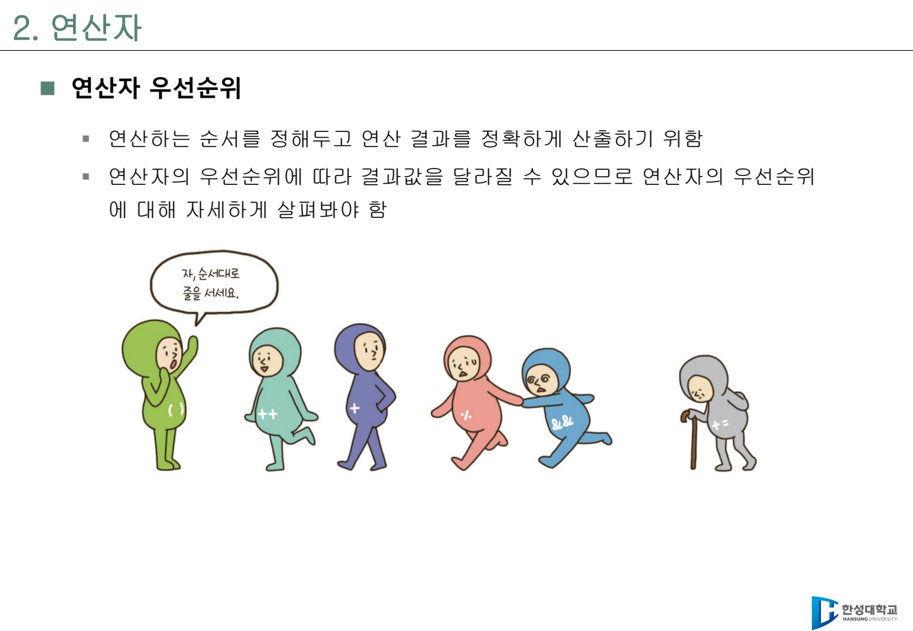
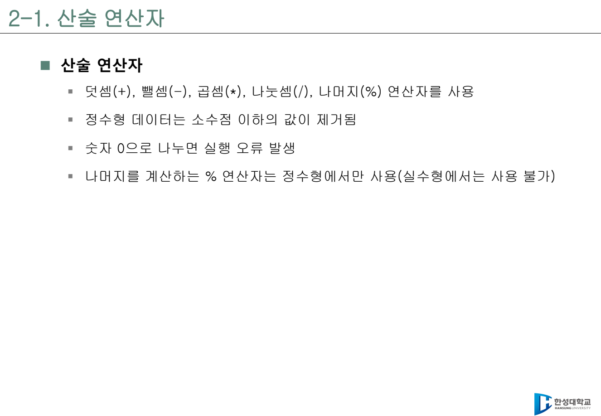
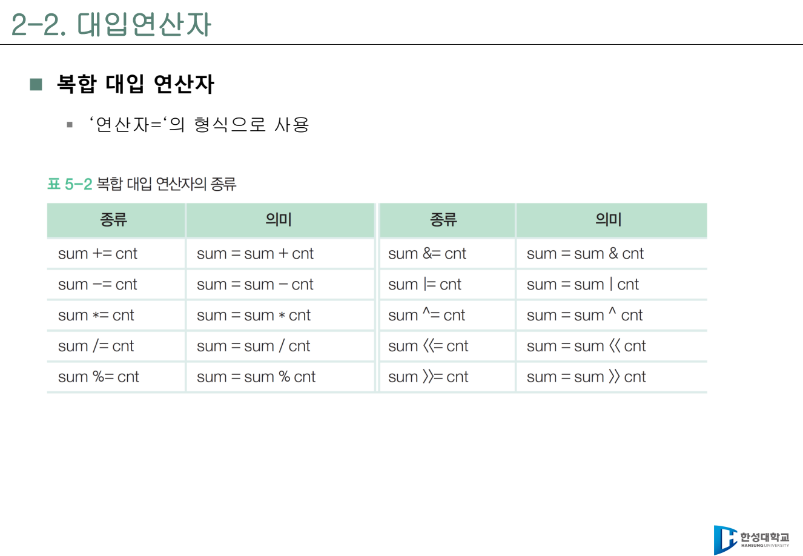
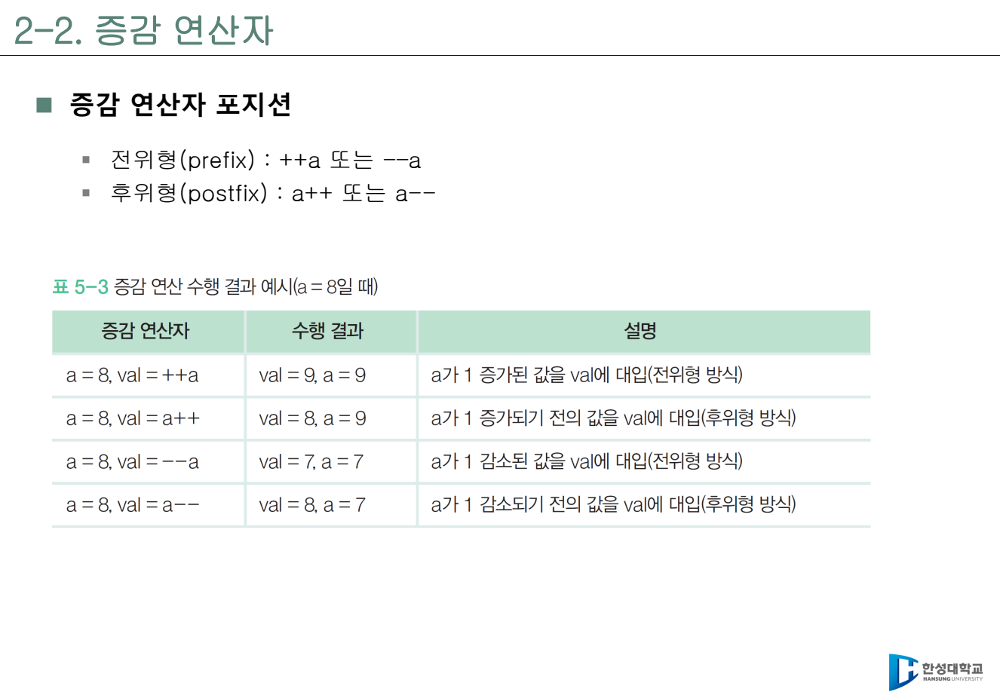
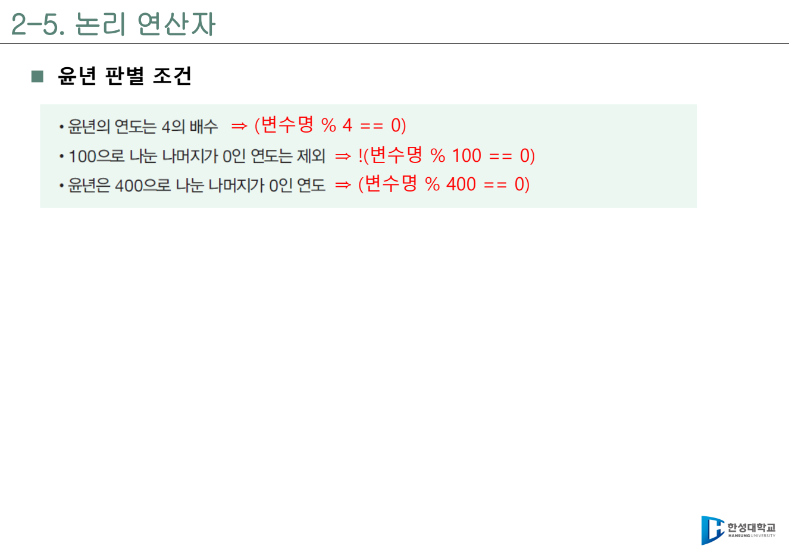
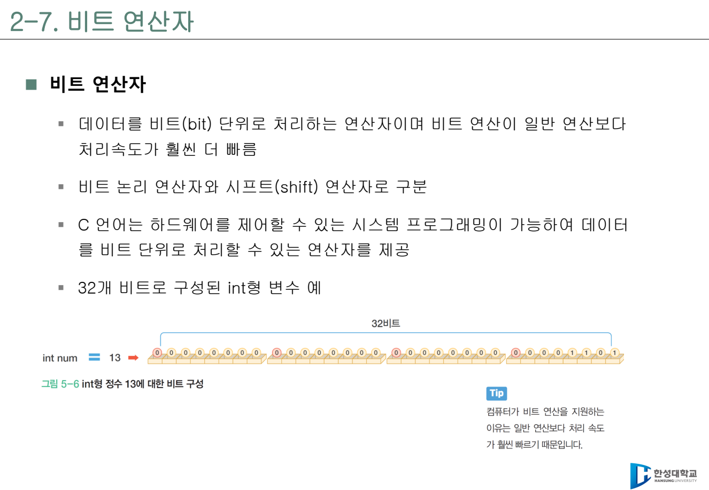
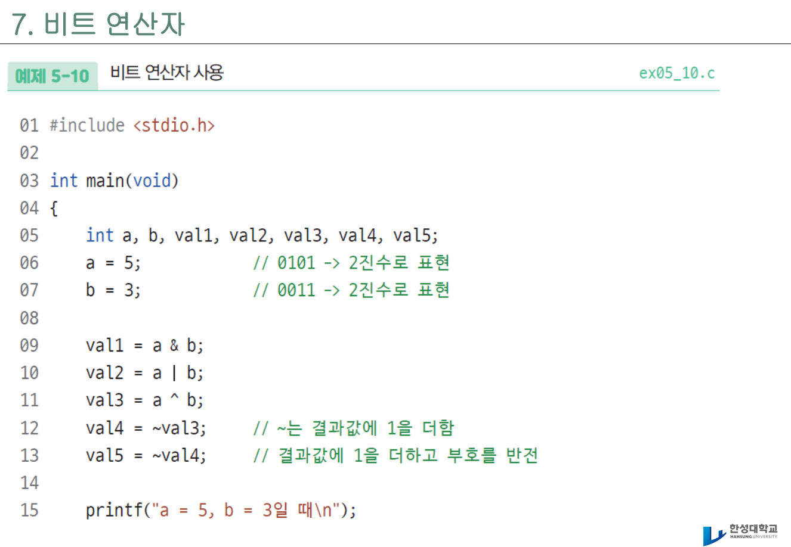
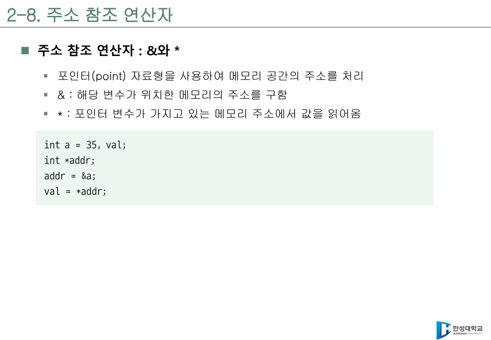

4주차 · 연산자¶
C언어 · 미래모빌리티학과 | CLO1 | 교재 Ch05 | 원본 PDF:
5-1. 연산자,5-2. 연산자 - 실습

학습 목표¶
- 수식(expression), 연산자(operator), 피연산자(operand)의 의미를 설명할 수 있다.
- 산술, 대입, 복합 대입, 증감, 관계, 논리, 조건, 비트 연산자를 구분해 사용할 수 있다.
- 연산자 우선순위와 결합 방향을 이해하고, 괄호로 의도를 명확히 표현할 수 있다.
- 정수 나눗셈, 0으로 나누기, 나머지 연산자
%의 제한을 설명할 수 있다. =와==,&&와&,||와|의 차이를 구분할 수 있다.- 비트 연산자로 센서 상태 플래그를 켜기, 끄기, 토글, 확인할 수 있다.
- 주소 참조 연산자
&, 간접 참조 연산자*,sizeof, 캐스트 연산자를 다음 단원과 연결해 이해한다. - Arduino UNO R4 WiFi에서 센서·버튼·LED 상태를 연산자로 처리하는 예제를 읽을 수 있다.
이번 주차의 큰 그림¶
3주차까지는 값을 입력받고 변수에 저장하고 출력하는 방법을 배웠다. 4주차는 그 값들을 실제로 "계산하고 판단하는" 방법을 배운다. 연산자는 C 프로그램의 문장 안에서 값을 바꾸거나, 비교하거나, 여러 조건을 묶거나, 하드웨어 상태를 비트 단위로 다루는 도구다.
연산자는 단순 계산 기호가 아니다. 모빌리티 시스템에서는 다음처럼 실제 판단으로 연결된다.
- 산술 연산:
speed = distance / time - 관계 연산:
distance < stop_distance - 논리 연산:
(distance < stop_distance) && (speed > 0) - 대입 연산:
speed_kmh = speed_mps * 3.6 - 비트 연산:
sensor_flags & FRONT_SENSOR
이번 주차의 중요한 태도는 두 가지다. 첫째, 컴파일러가 계산하는 순서를 이해한다. 둘째, 사람이 읽기 쉬운 식을 쓴다. 우선순위를 외우는 것보다 괄호를 사용해 의도를 드러내는 습관이 더 오래 간다.

3시간 강의 운영안¶
| 시간 | 내용 | 교수자 진행 포인트 | 학생 활동 |
|---|---|---|---|
| 0~15분 | 3주차 복습 | 변수, 자료형, scanf_s, printf 형식 지정자 연결 |
입력값 2개를 받아 출력 |
| 15~40분 | 수식과 산술 연산자 | /, %, 0으로 나누기, 정수 나눗셈 함정 설명 |
몫/나머지/속도 계산 |
| 40~60분 | 대입·복합 대입 | =, +=, -=, *=, /=, %=의 의미 |
누적 거리, 배터리 감소식 작성 |
| 60~80분 | 증감 연산자 | 전위형 ++i, 후위형 i++ 결과 비교 |
출력 순서 예측 |
| 80~105분 | 관계·논리 연산자 | 참은 1, 거짓은 0, &&, ||, !, 단락 평가 설명 |
정지 조건과 윤년 조건 작성 |
| 105~125분 | 조건 연산자 | (조건) ? 참값 : 거짓값으로 최대값/상태 문자열 선택 |
큰 값 고르기 |
| 125~155분 | 비트 연산자 | &, |, ^, ~, <<, >>를 센서 플래그로 설명 |
센서 플래그 켜기/끄기 |
| 155~170분 | 주소·sizeof·캐스트·콤마 | &, *, sizeof, (double), 콤마 연산자를 다음 단원과 연결 |
핵심 용도 표 작성 |
| 170~180분 | 형성평가 | 헷갈리는 연산자 5개를 짧게 점검 | 연습문제 풀이 |
이론-실습 연결표¶
| 이론 개념 | 바로 해볼 실습 | 확인 질문 |
|---|---|---|
| 연산자는 값을 바꾸는 규칙이다 | 몫, 나머지, 평균 계산 코드를 작성한다 | 정수 나눗셈과 실수 나눗셈 결과가 왜 다른가? |
| 비교와 논리는 판단을 만든다 | 정지거리, 윤년, 범위 조건식을 작성한다 | &&와 || 중 어떤 상황에 써야 하는가? |
| 비트 연산은 상태를 압축한다 | 센서 플래그를 켜고 끄는 코드를 실행한다 | &가 논리 AND가 아니라 비트 검사일 때는 언제인가? |
| Arduino 상태 처리 | 버튼/센서 상태를 플래그로 표현한다 | 보드 입력 여러 개를 숫자 하나에 담는 장점은 무엇인가? |
1. 수식과 연산자¶
수식(expression)은 값을 만들어 내는 코드 조각이다. 3 + 4, speed > 0, distance / time은 모두 수식이다. 연산자(operator)는 계산이나 판단을 수행하는 기호이고, 피연산자(operand)는 연산의 대상이 되는 값이다.
위 코드에서 +는 연산자, a와 b는 피연산자다. a + b는 수식이고, 그 결과가 result에 대입된다.
연산자는 크게 다음처럼 나누어 볼 수 있다.
| 분류 | 연산자 | 대표 용도 |
|---|---|---|
| 산술 | +, -, *, /, % |
거리, 속도, 평균, 나머지 계산 |
| 대입 | =, +=, -=, *=, /=, %= |
변수값 저장, 누적, 감소 |
| 증감 | ++, -- |
카운터 1 증가/감소 |
| 관계 | >, <, >=, <=, ==, != |
두 값 비교 |
| 논리 | &&, ||, ! |
여러 조건 결합 |
| 조건 | ? : |
조건에 따라 값 선택 |
| 비트 | &, |, ^, ~, <<, >> |
플래그, 레지스터, 센서 상태 |
| 주소 참조 | &, * |
주소 구하기, 주소가 가리키는 값 읽기 |
| 기타 | sizeof, 캐스트, 콤마 |
크기 확인, 자료형 변환, 수식 연결 |
2. 산술 연산자¶
산술 연산자는 덧셈, 뺄셈, 곱셈, 나눗셈, 나머지를 계산한다.

#include <stdio.h>
int main(void) {
int a = 7;
int b = 2;
printf("a + b = %d\n", a + b);
printf("a - b = %d\n", a - b);
printf("a * b = %d\n", a * b);
printf("a / b = %d\n", a / b);
printf("a %% b = %d\n", a % b);
return 0;
}
예상 출력:
7 / 2가 3인 이유는 두 피연산자가 모두 정수이기 때문이다. 정수 나눗셈에서는 소수점 이하가 버려진다. 실수 결과가 필요하면 명시적으로 실수 계산으로 바꿔야 한다.
나머지 연산자 %¶
나머지 연산자 %는 정수에서만 사용할 수 있다. 실수에는 그대로 사용할 수 없다.
활용 예:
n % 2 == 0: 짝수 판별n % 2 != 0: 홀수 판별n % 3 == 0: 3의 배수 판별seconds % 60: 초 단위를 분/초로 나눌 때 남는 초 계산
0으로 나누기
/ 또는 %의 오른쪽 값이 0이면 실행 오류가 발생할 수 있다. 입력받은 값으로 나눌 때는 5주차 조건문에서 time_s != 0 같은 확인을 먼저 하게 된다.
3. 대입 연산자와 복합 대입 연산자¶
대입 연산자 =는 오른쪽 값을 왼쪽 변수에 저장한다. 수학의 등호처럼 "같다"가 아니라 "넣는다"는 뜻이다.
=의 왼쪽에는 값을 저장할 수 있는 변수가 와야 한다.

복합 대입 연산자는 현재 변수값에 연산을 적용한 뒤 다시 저장한다.
| 표현 | 같은 의미 | 예 |
|---|---|---|
x += 5 |
x = x + 5 |
누적 거리 증가 |
x -= 5 |
x = x - 5 |
배터리 잔량 감소 |
x *= 2 |
x = x * 2 |
배율 적용 |
x /= 2 |
x = x / 2 |
절반으로 줄임 |
x %= 10 |
x = x % 10 |
마지막 자리만 남김 |
double distance_m = 0.0;
double step_m = 1.25;
distance_m += step_m;
distance_m += step_m;
printf("distance = %.2f m\n", distance_m);
모빌리티 로그에서는 누적 거리, 누적 시간, 배터리 감소량처럼 이전 값에 계속 더하거나 빼는 경우가 많다. 이때 복합 대입 연산자가 자연스럽다.
4. 증감 연산자¶
증감 연산자는 변수를 1 증가시키거나 1 감소시킨다.
전위형(prefix)은 먼저 증가/감소한 뒤 값을 사용한다. 후위형(postfix)은 현재 값을 먼저 사용한 뒤 증가/감소한다.

#include <stdio.h>
int main(void) {
int a = 10;
int b;
b = ++a;
printf("a=%d, b=%d\n", a, b);
a = 10;
b = a++;
printf("a=%d, b=%d\n", a, b);
return 0;
}
예상 출력:
초반에는 i++를 단독 문장으로 사용하는 습관이 가장 안전하다.
복잡한 수식 안에서 i++와 ++i를 섞으면 읽기 어려워지고 실수하기 쉽다. 반복문에서 다시 다루게 된다.
5. 관계 연산자¶
관계 연산자는 두 값을 비교한다. 결과는 참이면 1, 거짓이면 0이다. C에는 초반부에서 별도의 true/false 자료형을 깊게 쓰지 않으므로, 관계식의 결과가 0 또는 1로 출력된다고 이해하면 된다.
| 연산자 | 의미 | 예 |
|---|---|---|
> |
크다 | speed > 60 |
< |
작다 | distance < 2.0 |
>= |
크거나 같다 | battery >= 80 |
<= |
작거나 같다 | temp <= 30 |
== |
같다 | gear == 'D' |
!= |
같지 않다 | error_code != 0 |
#include <stdio.h>
int main(void) {
int speed = 42;
printf("%d\n", speed > 30);
printf("%d\n", speed == 0);
printf("%d\n", speed != 0);
return 0;
}
=와 == 구분
speed = 0은 speed에 0을 대입한다. speed == 0은 speed가 0인지 비교한다. 조건문에서 가장 흔한 실수 중 하나다.
6. 논리 연산자¶
논리 연산자는 여러 조건을 묶는다.
| 연산자 | 이름 | 의미 | 예 |
|---|---|---|---|
&& |
AND | 둘 다 참이면 참 | (speed > 0) && (distance < 2.0) |
|| |
OR | 하나라도 참이면 참 | (cmd == 'L') || (cmd == 'R') |
! |
NOT | 참/거짓을 뒤집음 | !(battery > 20) |
관계 연산과 논리 연산이 섞이면 괄호를 넣는 것이 좋다. 괄호는 컴파일러뿐 아니라 코드를 읽는 사람에게도 의도를 알려 준다.
윤년 판별 조건¶
원본 자료에서는 윤년 판별 조건을 논리 연산 예제로 다룬다.

윤년 조건:
- 4로 나누어 떨어지고 100으로 나누어 떨어지지 않으면 윤년
- 또는 400으로 나누어 떨어지면 윤년
int year = 2028;
int leap;
leap = ((year % 4 == 0) && (year % 100 != 0)) || (year % 400 == 0);
printf("leap = %d\n", leap);
이 식은 길지만 괄호 덕분에 사람이 읽을 수 있다. 5주차 조건문에서는 이 결과를 이용해 실제 분기 처리를 한다.
단락 평가¶
&&와 ||는 결과가 이미 정해지면 뒤쪽 식을 계산하지 않을 수 있다. 이를 단락 평가(short-circuit evaluation)라고 한다.
time_s != 0.0이 거짓이면 뒤쪽 나눗셈을 하지 않는다. 0으로 나누는 위험을 피하는 데 사용할 수 있다.
7. 조건 연산자¶
조건 연산자 ? :는 세 개의 피연산자를 사용하므로 삼항 연산자라고도 부른다.
예를 들어 두 수 중 큰 값을 고를 수 있다.
int a = 10;
int b = 20;
int max_value;
max_value = (a > b) ? a : b;
printf("max = %d\n", max_value);
상태 문자열을 고를 때도 사용할 수 있다.
int battery = 18;
const char *state = (battery < 20) ? "LOW" : "OK";
printf("battery state = %s\n", state);
조건 연산자는 짧은 선택에는 편하지만, 동작이 여러 줄로 길어지면 5주차의 if문이 더 읽기 좋다.
8. 비트 연산자¶
비트 연산자는 데이터를 비트 단위로 처리한다. 하드웨어 제어, 센서 플래그, 통신 패킷, 레지스터 설정에서 자주 사용된다.

| 연산자 | 이름 | 의미 |
|---|---|---|
& |
비트 AND | 둘 다 1이면 1 |
| |
비트 OR | 하나라도 1이면 1 |
^ |
비트 XOR | 서로 다르면 1 |
~ |
비트 NOT | 각 비트를 뒤집음 |
<< |
왼쪽 시프트 | 비트를 왼쪽으로 이동 |
>> |
오른쪽 시프트 | 비트를 오른쪽으로 이동 |
예를 들어 5와 3을 2진수로 보면 다음과 같다.
| 식 | 2진 결과 | 10진 결과 |
|---|---|---|
5 & 3 |
0001 |
1 |
5 | 3 |
0111 |
7 |
5 ^ 3 |
0110 |
6 |
~5는 단순히 5의 반대 숫자가 아니라 모든 비트를 뒤집는다. int처럼 부호가 있는 자료형에서는 보수 표현 때문에 보통 ~5가 -6처럼 보인다. 초반에는 ~를 플래그 끄기에서 주로 사용한다.
9. 센서 플래그 실습¶
비트 연산을 가장 쉽게 이해하는 방법은 각 비트를 작은 스위치로 보는 것이다. 정수 하나에 여러 센서 상태를 담을 수 있다.

#include <stdio.h>
#define S_FRONT (1 << 0) // 0001
#define S_LEFT (1 << 1) // 0010
#define S_RIGHT (1 << 2) // 0100
#define S_REAR (1 << 3) // 1000
int main(void) {
unsigned char sensors = 0;
sensors |= S_FRONT; // 전방 센서 켜기
sensors |= S_RIGHT; // 오른쪽 센서 켜기
printf("sensors = %u\n", sensors);
if (sensors & S_FRONT) {
printf("front detected\n");
}
sensors &= (unsigned char)~S_FRONT; // 전방 센서 끄기
sensors ^= S_LEFT; // 왼쪽 센서 토글
printf("sensors = %u\n", sensors);
return 0;
}
동작 정리:
| 동작 | 코드 | 의미 |
|---|---|---|
| 켜기 | sensors |= FLAG; |
해당 비트를 1로 만든다 |
| 끄기 | sensors &= ~FLAG; |
해당 비트를 0으로 만든다 |
| 토글 | sensors ^= FLAG; |
0이면 1, 1이면 0으로 바꾼다 |
| 확인 | sensors & FLAG |
해당 비트가 켜져 있는지 확인한다 |
비트 연산을 어디에 쓰는가
Arduino, 로봇 센서, ROS2 메시지, CAN 통신에서는 여러 on/off 상태를 한 정수에 담아 보내는 일이 많다. 비트 플래그는 작은 메모리로 많은 상태를 표현하는 방법이다.
10. 시프트 연산자¶
시프트 연산자는 비트를 왼쪽 또는 오른쪽으로 이동한다.
int a = 5; // 0000 0101
printf("%d\n", a << 1); // 10
printf("%d\n", a << 2); // 20
printf("%d\n", a >> 1); // 2
왼쪽 시프트는 보통 2를 곱하는 효과가 있고, 오른쪽 시프트는 2로 나누는 효과가 있다. 다만 부호 있는 정수의 오른쪽 시프트나 범위를 넘는 시프트는 환경에 따라 조심해야 한다.
플래그 정의에서 1 << 0, 1 << 1, 1 << 2를 쓰는 이유는 각 비트 위치를 명확히 만들기 위해서다.
#define BIT0 (1 << 0) // 1
#define BIT1 (1 << 1) // 2
#define BIT2 (1 << 2) // 4
#define BIT3 (1 << 3) // 8
11. 주소 참조 연산자¶
주소 참조 연산자는 포인터 단원으로 이어지는 중요한 내용이다.

| 연산자 | 의미 | 예 |
|---|---|---|
& |
변수의 주소를 구함 | &speed |
* |
주소가 가리키는 값을 읽거나 씀 | *p |
3주차 scanf_s()에서 사용한 &가 바로 주소 연산자다.
입력 함수는 speed의 값을 바꿔야 하므로 speed가 저장된 위치를 알아야 한다. 그래서 &speed를 넘긴다.
포인터 예고:
자세한 포인터 문법은 12주차에 다루지만, 지금은 &가 "주소를 알려 주는 연산자"라는 점을 기억하면 된다.
12. sizeof, 캐스트, 콤마 연산자¶
sizeof¶
sizeof는 변수나 자료형의 크기를 바이트 단위로 구한다.
자료형에는 괄호가 필요하다. 변수명에는 괄호를 생략할 수도 있지만, 수업에서는 일관성을 위해 괄호를 붙여 쓴다.
캐스트 연산자¶
캐스트 연산자는 자료형을 명시적으로 바꿔 계산하게 한다.
(double)a / b는 이 계산에서 a를 실수처럼 다루라는 뜻이다. 3주차 자료형 변환과 연결된다.
콤마 연산자¶
콤마 연산자는 두 개 이상의 수식을 하나로 연결한다. 특히 반복문에서 자주 본다.
지금은 "여러 초기식이나 여러 증감식을 한 줄에 묶을 때 쓰인다" 정도로 이해하면 충분하다. 반복문 단원에서 다시 만난다.
13. Arduino UNO R4 WiFi와 연결하기¶
연산자는 Arduino 코드에서도 그대로 중요하다. 버튼이 눌렸는지 비교하고, 센서값이 임계값보다 큰지 판단하고, LED 상태를 토글하고, 여러 센서 상태를 비트 플래그로 묶을 수 있다.
13.1 버튼 상태 토글¶
const int buttonPin = 2;
const int ledPin = 13;
int lastButton = HIGH;
int ledState = LOW;
void setup() {
pinMode(buttonPin, INPUT_PULLUP);
pinMode(ledPin, OUTPUT);
}
void loop() {
int button = digitalRead(buttonPin);
if ((lastButton == HIGH) && (button == LOW)) {
ledState = !ledState;
digitalWrite(ledPin, ledState);
}
lastButton = button;
}
여기에는 관계 연산자 ==, 논리 연산자 &&, 논리 NOT !, 대입 연산자 =가 모두 들어 있다.
13.2 센서 플래그 만들기¶
#define S_FRONT (1 << 0)
#define S_LEFT (1 << 1)
#define S_RIGHT (1 << 2)
uint8_t sensors = 0;
void loop() {
sensors = 0;
if (analogRead(A0) > 500) sensors |= S_FRONT;
if (analogRead(A1) > 500) sensors |= S_LEFT;
if (analogRead(A2) > 500) sensors |= S_RIGHT;
if (sensors & S_FRONT) {
Serial.println("front obstacle");
}
}
이 예제는 5주차 조건문, 6주차 반복문, 11주차 통신, 15주차 ROS2 연결로 이어진다. 센서 상태를 정수 하나에 담으면 시리얼 통신이나 ROS2 메시지로 보내기 쉽다.
14. 실습¶
실습 4-1 · 산술 연산과 정수 나눗셈¶
#include <stdio.h>
int main(void) {
int a = 7;
int b = 2;
printf("a / b = %d\n", a / b);
printf("a %% b = %d\n", a % b);
printf("(double)a / b = %.1f\n", (double)a / b);
return 0;
}
질문: a / b와 (double)a / b의 결과가 다른 이유를 한 문장으로 적는다.
실습 4-2 · 속도 계산기¶
거리와 시간을 입력받아 m/s와 km/h를 모두 출력한다.
#include <stdio.h>
int main(void) {
double distance_m;
double time_s;
double speed_mps;
double speed_kmh;
printf("거리(m) 시간(s): ");
scanf_s("%lf %lf", &distance_m, &time_s);
speed_mps = distance_m / time_s;
speed_kmh = speed_mps * 3.6;
printf("%.2f m/s\n", speed_mps);
printf("%.2f km/h\n", speed_kmh);
return 0;
}
확장 질문: time_s가 0이면 어떻게 막아야 할까?
실습 4-3 · 복합 대입으로 배터리 잔량 계산¶
#include <stdio.h>
int main(void) {
double battery = 100.0;
battery -= 12.5;
battery -= 7.0;
battery += 3.5;
printf("battery = %.1f%%\n", battery);
return 0;
}
실습 4-4 · 전위형과 후위형 비교¶
#include <stdio.h>
int main(void) {
int a = 3;
printf("%d\n", ++a);
printf("%d\n", a++);
printf("%d\n", a);
return 0;
}
출력 순서를 예측한 뒤 실행한다.
실습 4-5 · 윤년 판별식¶
#include <stdio.h>
int main(void) {
int year;
int leap;
printf("연도 입력: ");
scanf_s("%d", &year);
leap = ((year % 4 == 0) && (year % 100 != 0)) || (year % 400 == 0);
printf("leap = %d\n", leap);
return 0;
}
5주차 조건문을 배우면 leap이 1일 때 "윤년입니다"를 출력하게 만들 수 있다.
실습 4-6 · 센서 플래그¶
#include <stdio.h>
#define FRONT (1 << 0)
#define LEFT (1 << 1)
#define RIGHT (1 << 2)
int main(void) {
unsigned char flags = 0;
flags |= FRONT;
flags |= RIGHT;
printf("flags = %u\n", flags);
printf("front = %d\n", (flags & FRONT) != 0);
printf("left = %d\n", (flags & LEFT) != 0);
printf("right = %d\n", (flags & RIGHT) != 0);
flags &= (unsigned char)~FRONT;
printf("flags = %u\n", flags);
return 0;
}
실습 4-7 · 조건 연산자로 상태 고르기¶
#include <stdio.h>
int main(void) {
int battery = 18;
const char *state;
state = (battery < 20) ? "LOW" : "OK";
printf("state = %s\n", state);
return 0;
}
15. 도전문제¶
도전문제 1 · 우선순위 예측¶
다음 식의 값을 예측한다.
정답 및 해설
결과는 11이다. 곱셈이 덧셈보다 먼저 계산되어 3 + 8이 된다.
도전문제 2 · 괄호로 의도 바꾸기¶
다음 두 식의 결과를 비교한다.
정답 및 해설
a는 11, b는 14다. 괄호는 계산 순서를 명확히 바꾼다.
도전문제 3 · 비트 플래그 계산¶
최종 s의 값은?
정답 및 해설
처음에는 0이다. 0번 비트를 켜면 1, 2번 비트를 켜면 0101이라 5, 다시 0번 비트를 끄면 0100이라 4가 된다.
도전문제 4 · 홀짝 판별¶
% 연산자를 사용하지 않고 홀짝을 판별한다.
정답 및 해설
마지막 비트가 1이면 홀수, 0이면 짝수다. 따라서 n & 1이 1이면 홀수다.
도전문제 5 · Arduino 센서 상태 압축¶
Arduino에서 A0, A1, A2 센서값이 500보다 크면 각각 전방, 왼쪽, 오른쪽 장애물로 판단해 uint8_t flags에 저장한다. 어떤 연산자를 사용해야 하는가?
정답 및 해설
비교에는 >, 비트 켜기에는 |=, 특정 플래그 확인에는 &를 사용한다.
16. 자주 막히는 지점¶
=는 대입이고==는 비교다.&&와&는 다르다.&&는 논리 AND,&는 비트 AND다.||와|도 다르다.||는 논리 OR,|는 비트 OR다.%는 정수 나머지 연산자이며 실수에는 사용할 수 없다.- 정수끼리 나누면 결과도 정수로 계산된다.
i++와++i는 단독 문장에서는 비슷하지만, 다른 수식과 섞이면 결과가 달라질 수 있다.- 비트 NOT
~는 부호 비트까지 뒤집을 수 있으므로 플래그 마스크와 함께 조심해서 쓴다. - 우선순위가 헷갈리면 괄호를 쓴다. 괄호는 가독성을 높이는 도구다.
17. 핵심 용어 정리¶
| 용어 | 설명 |
|---|---|
| 수식 | 값을 만들어 내는 코드 조각 |
| 연산자 | 계산이나 판단을 수행하는 기호 |
| 피연산자 | 연산의 대상 값 |
| 우선순위 | 여러 연산자가 있을 때 먼저 계산되는 순서 |
| 결합 방향 | 같은 우선순위 연산자가 이어질 때 묶이는 방향 |
| 단락 평가 | &&, ||에서 결과가 정해지면 뒤쪽 식을 계산하지 않는 동작 |
| 비트 플래그 | 정수의 각 비트를 on/off 상태로 사용하는 방법 |
| 시프트 | 비트를 왼쪽 또는 오른쪽으로 이동하는 연산 |
| 캐스트 | 자료형을 명시적으로 바꾸는 연산 |
18. 형성평가 체크포인트¶
-
3 + 4 * 2와(3 + 4) * 2의 결과를 설명할 수 있다. -
=와==의 차이를 말할 수 있다. -
&&,||,!의 의미를 예제로 설명할 수 있다. -
n % 2와n & 1로 홀짝 판별을 할 수 있다. -
sensors |= FLAG,sensors &= ~FLAG,sensors & FLAG의 의미를 설명할 수 있다. -
&speed가 주소를 구하는 표현임을 설명할 수 있다. -
(double)a / b가 필요한 이유를 설명할 수 있다.
19. 과제¶
- 거리와 시간을 입력받아 m/s, km/h를 모두 출력한다.
- 정수 하나를 입력받아
%로 홀짝을 판별한다. - 같은 정수를
& 1로도 홀짝 판별한다. - 윤년 판별식을 작성하고
leap값 0 또는 1을 출력한다. - 전방, 왼쪽, 오른쪽 센서 플래그를 비트로 켜고 확인하는 프로그램을 작성한다.
- Arduino UNO R4에서 버튼 입력으로 LED 상태를 토글하는 코드를 실행해 본다.
20. 다음 주차 연결¶
이번 주차의 관계 연산자와 논리 연산자는 5주차 조건문의 직접 재료다. 5주차에는 if, else if, else를 사용해 "조건이 참이면 어떤 동작을 수행한다"는 구조를 만든다. 예를 들어 (distance < stop_distance) && (speed > 0)이 참이면 LED 표정을 바꾸거나 모터를 감속하는 식으로 확장된다.
참조¶
- 교재 Ch05 · 연산자
- C 연산자 우선순위: https://en.cppreference.com/w/c/language/operator_precedence